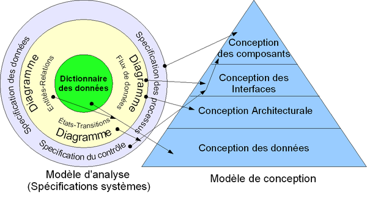

C'est un informaticien professionnel agréé ou un ingénieur logiciel membre d'un ordre professionnel dans plusieurs pays. Le rôle d'architecte logiciel peut, dans de petits projets, être tenu par l'analyste, le chef de projet ou le développeur responsable du projet. Dans les grandes entreprises, il est possible de trouver un architecte logiciel en chef qui est responsable de l'application des normes d'architecture à l'ensemble des projets et de la gestion et de la réutilisation des composants logiciels de l'entreprise. Dans les projets d'envergure, il est possible de retrouver un architecte logiciel et plusieurs sous-architectes logiciel, responsables de parties disjointes du logiciel à construire.
| Video pour prendre de connesaince | Voici la modele |
|  |